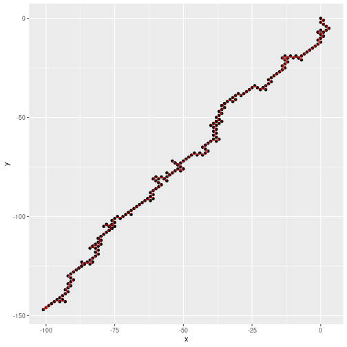

Entrega 1: Ejercicio 6
David Cabezas
Fijamos la semilla.
set.seed(18)
Función que simula un paso.
paso <- function(x,y) { dados = sample(6,3,T) # Lanzo los tres dados if (dados[1]<=2){ # Si primer dado es 1 ó 2, una unidad a la derecha x=x+1 } else{ # Si no, una a la izquierda x=x-1 } if (dados[2]+dados[3]<5){ # Si la suma de los dados 2 y 3 es menor que 5, una unidad hacia arriba y=y+1 } else{ # Si no, una hacia abajo y=y-1 } return(c(x,y)) # Devuelvo el punto actualizado } paso(0,0)
## [1] 1 -1
Función que simula el movimiento.
desplazamiento <- function(lim=10000){ x=0 y=0 t=2 progresionX=rep(0,lim) progresionY=rep(0,lim) while (t<=lim){ P=paso(x,y) # Desplazamiento x=P[1] y=P[2] progresionX[t]=x # Guardo sucesión progresionY[t]=y if (abs(x)>100){ # Condición de parada break } t=t+1 } salida=t<=lim # Si no llegó al límite, alcanzó la condición de salida if (!salida){ # Si llega al limite no se procesa el ultimo valor de t t=t-1 } progresionX=progresionX[1:t] progresionY=progresionY[1:t] progresion=data.frame(x=progresionX,y=progresionY) return( list( progresion=progresion, # Hasta donde recorrió, lo demás son ceros pasos=t-1, # Número de desplazamientos, llamadas a la función desplazamiento salida=salida ) ) } resultado=desplazamiento(10000)
Representación del movimiento con un camino terminado en flecha Código modificado de este post.
library("ggplot2") library(grid) # needed for arrow function library(data.table) # see http://docs.ggplot2.org/current/geom_segment.html qplot(x, y, data = resultado$progresion)+ geom_path(linetype=1, size=0.5, arrow=arrow(angle=15, length=unit(0.08,'inches'), ends='last', type="closed"), color='red')+ geom_point (shape='.', size=1)
